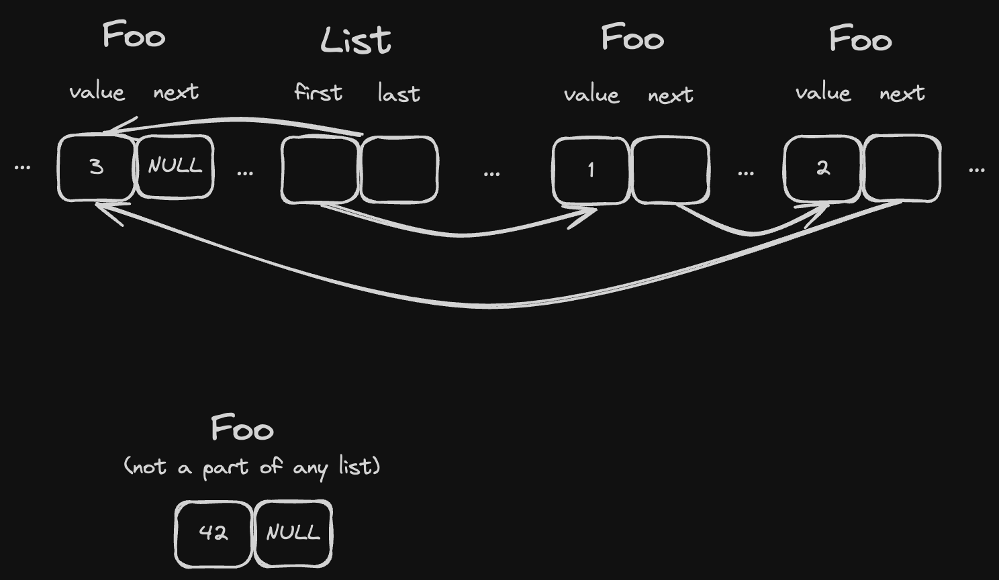

Single linked list
For T to be an element of a single linked list it must store a pointer to next inside of T:
#![allow(unused)] fn main() { struct Foo { value: i32, next: Cell<Option<NonNull<Foo>>> } }
Cellhere allows us to have interior mutability and modify its value via aconstreferenceOption<NonNull<T>>is just a safer way to have*mut T: we have to explicitly check forNoneinstead ofis_null()
And the list could look like this:
#![allow(unused)] fn main() { struct SingleLinkedIntrusiveList<'b, T> where T: SingleLinkedIntrusiveListItem, { first: Cell<Option<NonNull<T>>>, last: Cell<Option<NonNull<T>>>, _marker: core::marker::PhantomData<&'b ()>, } }
where:
'bis the lifetime of our arena. It shouldn't be possible for any arena-allocated structure to outlive the memory that it's located on.T: SingleLinkedIntrusiveListItemis our constraint for elements of the list
#![allow(unused)] fn main() { trait SingleLinkedIntrusiveListItem { fn next(&self) -> Option<NonNull<Self>>; fn set_next(&self, new_next: Option<NonNull<Self>>); } impl SingleLinkedIntrusiveListItem for Foo { fn next(&self) -> Option<NonNull<Self>> { self.next.get() } fn set_next(&self, new_next: Option<NonNull<Self>>) { self.next.set(new_next) } } }
Operations like .push(&'b Foo) and .pop() are the same as for the "standard" linked list, but instead of writing .next to List elements we write them straight to T using .set_next().

As a result, any T: SingleLinkedIntrusiveListItem:
- can be added to any existing list at any time, and this operation doesn't require any additional memory.
- can belong only to a single linked list. This requires a note that lists can "embed" each other and then elements can be "shared" (because their
nextpointer remains the same for both lists), and so operations likelist1.concat(list2)can be easily implemented with no copying.